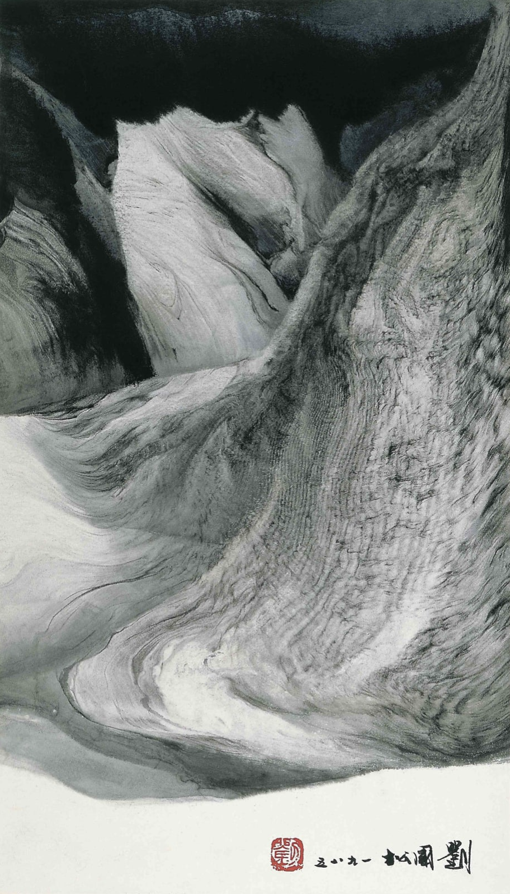
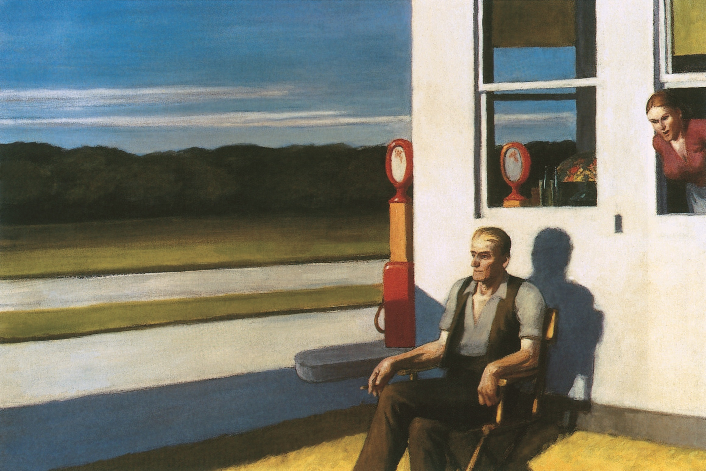
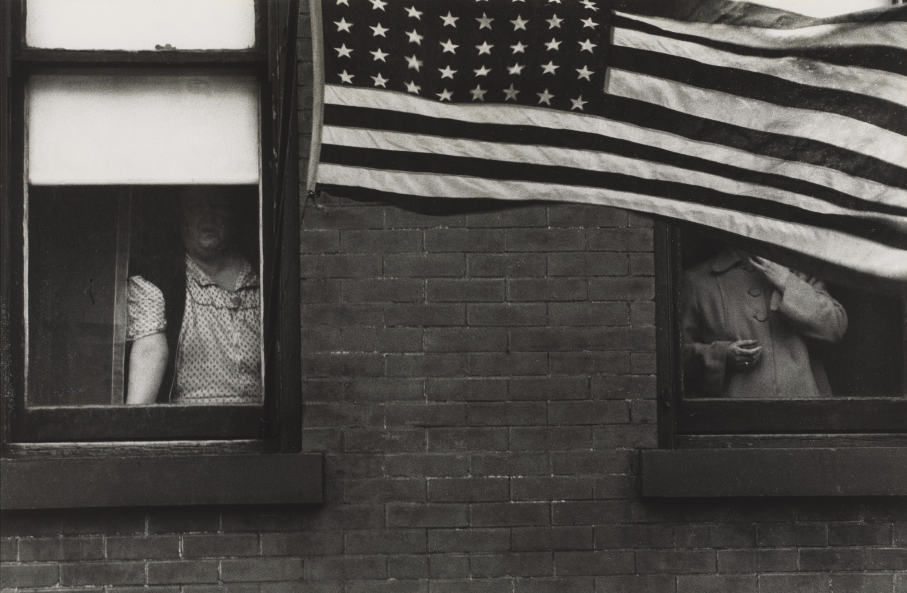

I was fortunate to see some of Liu Kuo-Sung's work at an exhibit here in SF, and I was struck by his otherworldly mountain landscapes. The texture, colors, and subtlety don't transfer through the screen, but I was floored by what he can do with just ink and paper. I find it inspiring when an artist like him can push a medium to its limit to create something totally new and unique.

I've always found the work of Edward Hopper to be quite compelling. He has this way of capturing solitude and isolation on a canvas that really captivates me. It feels to me like the subjects are the only people that exist in their world, like there is nothing beyond the horizon. His paintings feel both peaceful and unsettling at the same time. It's a strange and surreal feeling that I really connect with.

Robert Frank's work in his book The Americans (1958) has come to define what is now considered street photography. At the height of America's cultural dominion, his photos broke down the illusory image of the "American Dream" by showing the true racial and economic stratification that American society was and is built on. I take inspiration from his ability to strongly compose narrative and perspective in a medium such as photography.
What did you learn while creating this page?
What patterns or connections do you notice among your three inspirations?
How did you organize the images and descriptions?
What problems did you encounter while working with image files and relative paths?
How did you decide what information to include in the alt text?
What did you learn while creating external hyperlinks?
Did any of your links fail to work at first? If so, what did you discover?
Are you satisfied with the page in its current state? Why or why not?
What would you change or attempt with more time?